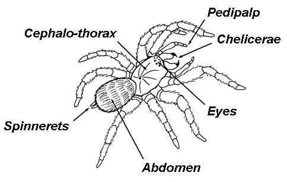

When you think of big Spiders what is the first one that comes to mind? For many people it happens to be the Tarantula. This is one of the most common Spiders around that people have information about. It is also called the Baboon Spider in regions such as Africa. This is due to the hairy body that it displays. Such a look makes it simple to tell them apart from other species of Spiders.

This a definitely a large Spider so it can be frightening when you see one. They can grow as big as 12 inches in length. The females are quite a big bigger than the males – they average 8 inches. Most of them are gray or brown in color and they have dark black stripes on the legs.
Behavior
This is one type of Spider that doesn’t spend time creating a web for capturing prey. As a result most people don’t realize that it does have the ability to make silk. They will line the burrows where they live with this type of material. It helps them to be able to gain access into it and out of it with ease. At the same time though any predators that may have gotten in there won’t be leaving so easily.
So why does the Tarantula have such a terrible reputation? It has to do with the stories that have circulated for centuries. Their dark sinister look is one that many people associate with evil. This is also one that is commonly known as a decorative form for the Halloween holiday.
Even though the Tarantula is usually a timid Spider, they have been known to show signs of aggression. This is often when they feel backed into a corner by humans, they can’t see what is going on around them, or they are fighting other males for the right to mate with females.
A common sign of aggression for this type of Spider is that they will have the front legs up in the air. They are one of the few species of Spiders that will hiss too in an effort to warn problems around them to go away. This is their defense mechanism in an effort not to have to fight.
Molting
Tarantulas periodically shed their external skeletons in a process called molting. In the process, they also replace internal organs, such as female genitalia and stomach lining, and even regrow lost appendages.
Habitat
There are hundreds of tarantula species found in most of the world's tropical, subtropical, and arid regions. They vary in color and behavior according to their specific environments. Generally, however, tarantulas are burrowers that live in the ground.
Hunting
Tarantulas are slow and deliberate movers, but accomplished nocturnal predators. Insects are their main prey, but they also target bigger game, including frogs, toads, and mice. The South American bird-eating spider, as it name suggests, is even able to prey upon small birds.
A tarantula doesn't use a web to ensnare prey, though it may spin a trip wire to signal an alert when something approaches its burrow. These spiders grab with their appendages, inject paralyzing venom, and dispatch their unfortunate victims with their fangs. They also secrete digestive enzymes to liquefy their victims' bodies so that they can suck them up through their straw-like mouth openings. After a large meal, the tarantula may not need to eat for a month.
Natural Threats
Tarantulas have few natural enemies, but parasitic pepsis wasps are a formidable exception. Such a wasp will paralyze a tarantula with its sting and lay its eggs on the spider's body. When the eggs hatch, wasp larvae gorge themselves on the still living tarantula.
Reproduction
The tarantula's own mating ritual begins when the male spins a web and deposits sperm on its surface. He copulates by using his pedipalps (short, leglike appendages located near the mouth) and then scuttles away if he can—females sometimes eat their mates.
Females seal both eggs and sperm in a cocoon and guard it for six to nine weeks, when some 500 to 1,000 tarantulas hatch.